-
PsyOps
Set in a military setting, all of the champions are specialized warriors of High Command, trained to battle in different combat scenarios.
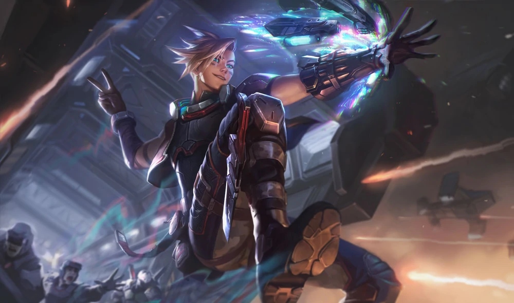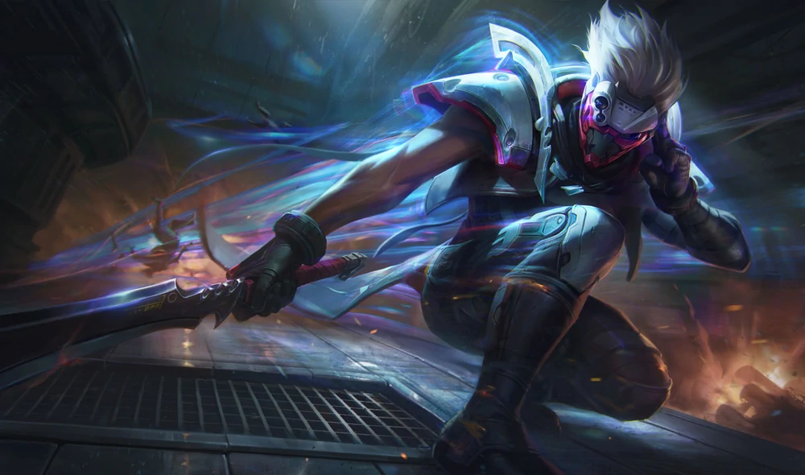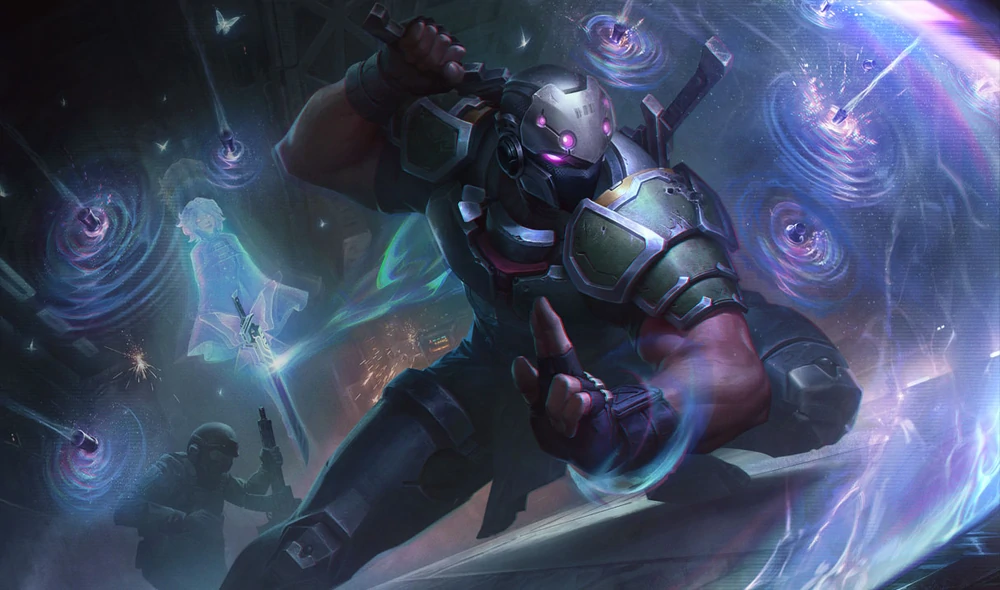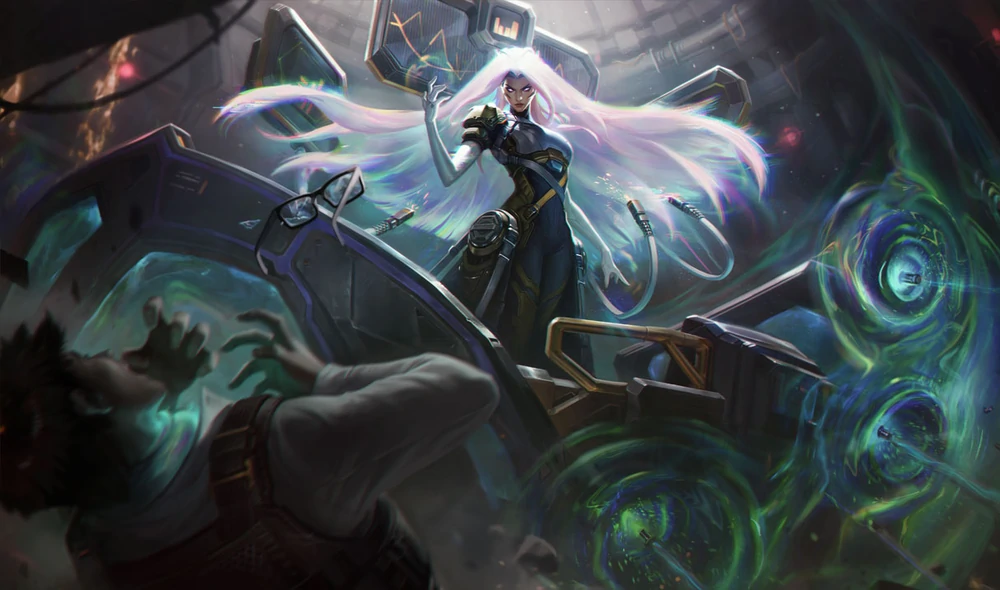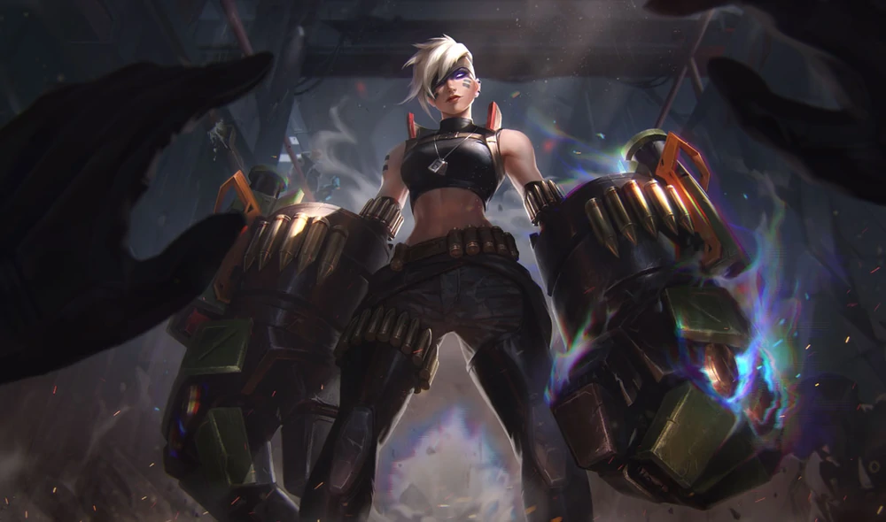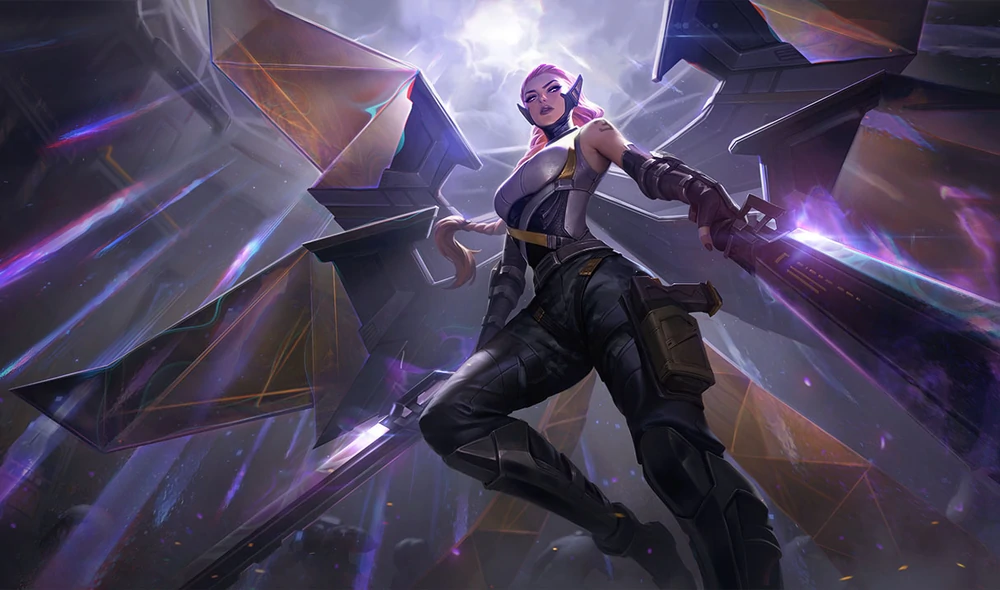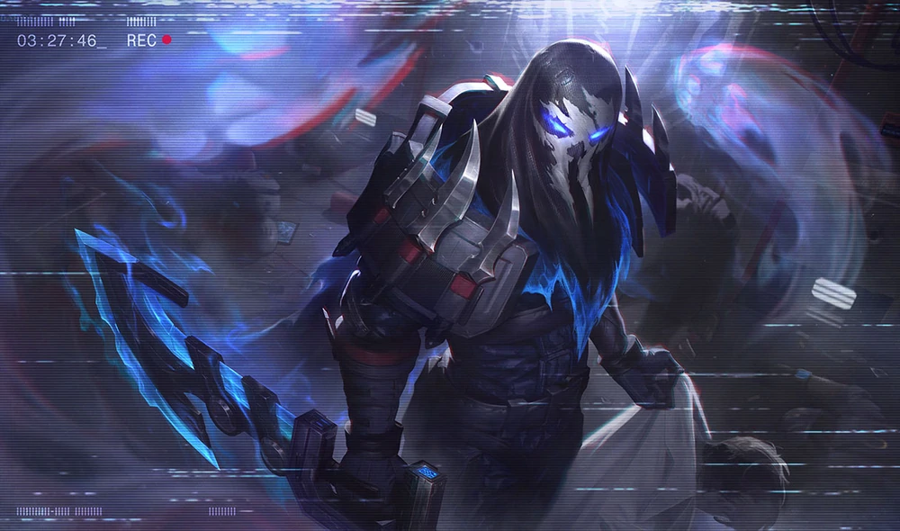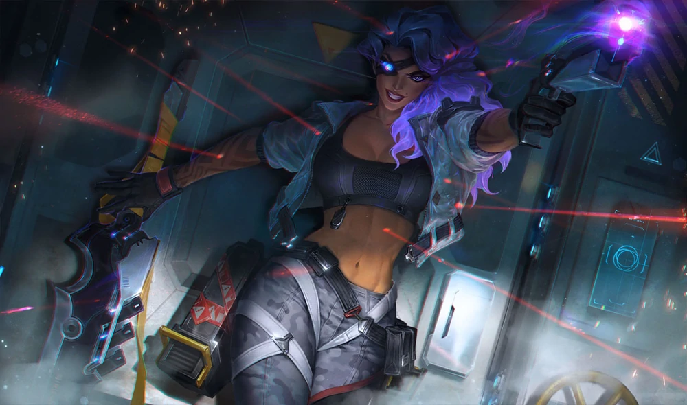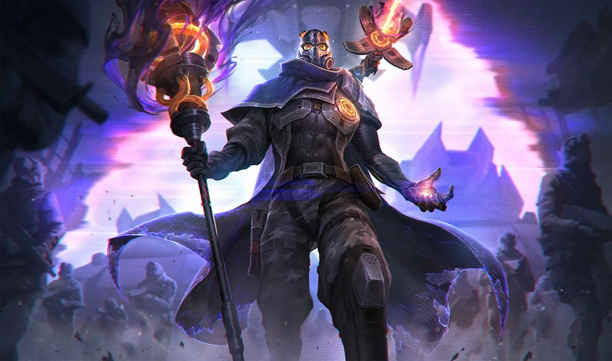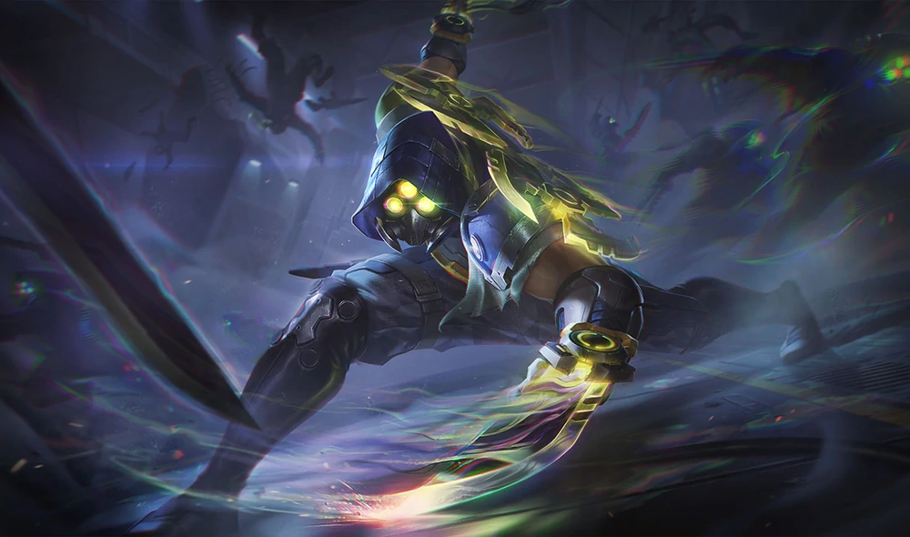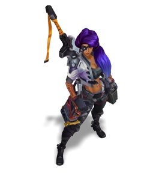PsyOps Ezreal
A young hotshot and the newest recruit in the elite PsyOps unit, Ezreal's raw psychic ability is only matched by his severely over-inflated ego. He has successfully annoyed the rest of his team to the point they just direct him towards hard targets and half-hope he winds up dead.PsyOps Master Yi
A legendary psychic swordsman and elite leader of the PsyOps unit. Yi is calm, professional, and always gets the job done, making him a terrifying bogeyman among rogue militaries, and a target for those harboring resentment towards the global war machine.PsyOps Shen
A psychic soldier and field lieutenant within PsyOps, Shen's power is connected to a phantom child that follows him wherever he goes -- granting him insight into the middens between the living and the dead. Where the boy came from only High Command knows, and they aren't talking.PsyOps Sona
An immensely powerful psychic, Sona has spent the past several years locked in darkness, subjected to harrowing experiments to further the Black Rose Group's aims of manufacturing the perfect human bioweapon. Freeing herself during the assault on the BRG's research facility, she discovers her power has grown to near-omnipotence, making her less a human than a psychic god.PsyOps Vi
A hand-to-hand combat specialist trained in psychically enhancing her blows with her mind, Vi takes care of “hard targets” for the rest of the PsyOps crew… generally by rushing ahead and punching them apart. She will fight anything and everything, including the old bipedal winter mechs from the Arctic Ops event 40 years prior.PsyOps Kayle
A self-described “savior” and powerful psionic swordswoman, Kayle views herself as an impartial judge in world affairs, appearing on wings powered by psychic energy as an angel of war. Her understanding of the world is black and white to a frightening extreme, and she has joined the paramilitary BRG to see her twisted vision realized.PsyOps Pyke
A member of the Black Rose Group's leadership and a powerful spiritual medium, Pyke's mastery of psychic power allows him to jump across the barrier separating the living and the dead. This process has slowly eaten at his mind, leaving him a half-deranged killer screaming at literal ghosts.PsyOps Samira
Fearless and deadly, Samira was once a renowned soldier of fortune. A born thrill seeker, she fights not for fame or wealth, but to push the limits of her skill. Through intense training, her innate psychic powers have been fully unleashed, allowing her to turn every mission and every kill into a thrilling display of stylish flair.PsyOps Viktor
Leader of the rogue military known as the Black Rose Group, Viktor is a psychic technomancer whose vision for a utopian world was abandoned when he suddenly departed High Command decades prior. Obsessed with an alien 'gate' uncovered during the Arctic Ops event, his experiments into human bioweapons would allow him to breach it and upend the global order.PsyOps Zed
Known as the “Gas Can Man” in paramilitary circles, Zed is an infamous mercenary picked up by the Black Rose Group during one of their covert actions. His psionic powers are tied to a mysterious oil-like substance he ingests through his mask, allowing him to duplicate himself for assassinations and open combat.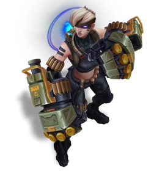 -